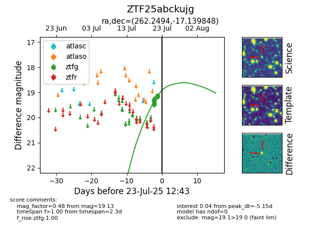

Target ZTF25abckujg at 2025-07-23 12:43, see:
FINK: fink-portal.org/ZTF25abckujg
Lasair: lasair-ztf.lsst.ac.uk/objects/ZTF25abckujg
ALeRCE: alerce.online/object/ZTF25abckujg
alt names
ZTF25abckujg (ztf,fink)
coordinates:
equatorial (ra, dec) = (262.2494,-17.13985)
galactic (l, b) = (8.0064,+9.49646)
photometry
last ztfg=19.13
5 ztfg detections
